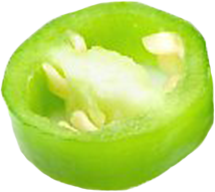
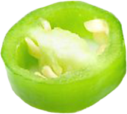

한국음식의 양념으로 사용되는 대표적인 향신료로 가지과에 속하는 고추 또는 그 변종의 성숙한 열매를 건조한 후 가루로 만든 것이다. 고춧가루는 음식에서 매운맛과 붉은 색깔을 내기 위해 주로 사용되는데, 이러한 재료적 가치는 원료인 고추에서 비롯되는 것이다.
산초
초피나무와 열매가 비슷하여 혼동하는 경우가 있으나, 서로 다른 식물이다. 초피는 과실을 가루로 내어서 향신료나 약재를 이용하는 것이 목적이고, 산초는 기름을 짜서 먹는 것이 목적이다. 산초를 이용한 대표적인 음식으로 마라탕을 들 수 있다. 마라탕의 혀가 얼얼하게 마비되는 듯한 느낌은 산초가 들어가기 때문이다.
강황
강황은 엄청 오래 전부터 써 왔던 식물이다. 어음에는 염료로 썼는데 나중에는 전통 의술에서 약으로도 쓰게 되었고, 향신료로도 쓰게 되었다. 향신료로 쓸 때는 강황의 뿌리 줄기 부분을 쓴다. 뿌리줄기를 물에 넣어 몇 십 분간 끓이고 말린 후, 가루를 내서 쓴다. 가루의 색은 노란색을 띤 주황색에 가깝다.
계피
원산지는 중국 남부의 베트남 근처로 추측되며, 스리랑카, 인도, 브라질, 자메이카, 마다가스카르 등지의 열대 각지에서 폭넓게 재배된다. 세계에서 가장 오래된 향신료 중에 하나로 기원전 4000년 경부터 이집트에서 미라의 방부제로 사용되기도 했다. 계피는 매우면서 단맛이 난다는 것이 특징이다.
육두구
인도네시아가 원산지인 향신료로 넛맥이라고도 하는데 '사향 냄새가 나는 호두'라는 뜻이다. 일반적으로 사용되는 향신료로서의 육두구 열매 속에 든 흑갈색의 씨앗 부분을 갈아서 만든 것이다. 16세기부터 유럽에 전해지면서 인기를 누리게 된 향신료로, 정향이나 후추에 비해서 향이 작그적이지 않지만 묘하게 고급스런 향미가 나며 누린내나 비린내를 제거하는데 탁월하다.
후추
지구 상에 존재하는 여러 요리 재료 중 가장 많은 피를 부른 재료이며 동시에 역사를 바꾼 향신료다. 물론 역사에 영향을 미친 것엔 다양한 향신료가 있지만 역사의 한 페이지를 장식하는 대부분의 향신료는 후추이다. 그것도 주식도 아닌 양념의 일종인데도 말이다. 후추를 먹지 못해 죽은 사람은 많지만 후추를 탐내다 죽은 사람은 셀 수도 없이 많다.
와사비
고추냉이 또는 일본어식 표현인 와사비는 십자화과의 식물로, 일본 요리에서 뿌리를 갈아서 양념으로 쓴다. 뿌리를 간 매운 맛은 겨자와 비슷하지만 고추에 들어 있는 캡사이신과는 다른데, 혀를 자극하기보다는 증기가 코로 올라오면서 자극하기 때문이다.
방아
배초향(방아)은 꿀풀과에 속한 여러해살이풀로, 원산이며 중국, 대만, 일본에도 서식한다. 볕이 좋은 풀밭에서 자라며 풀 전체에서 특유의 향기가 진하게 난다. 경상도, 전라도의 일부 지역에서 깻잎처럼 배초향의 잎을 추어탕 들 찌개나 전골을 끓일 때 향신채로 넣기도 하고, 부치거나 튀겨 먹기도 한다.


 
